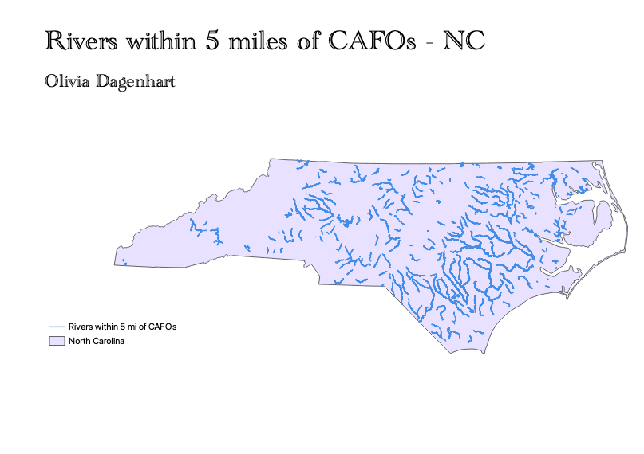

Homework 8 - Olivia Dagenhart
Research Question: What rivers in NC are within 5 miles of a concentrated animal feeding operation (CAFO)?
Background: CAFOs are large-scale agricultural facilities that raise animals for the purpose of consumption. North Carolina and Iowa are known for having a large amount of these operations. CAFOs pollute both the air and nearby water sources. They emit greenhouse gases, and can dicharge manure and other pollutants into surface water. Although there are regulations that decrease pollution, water quality problems in surrounding areas are still common.

Steps: I started with a county shapefile of NC. I then performed a dissolve, and county lines disappeared. I then added a point layer of CAFOs in North Carolina. I performed a buffer with a 5 mile radius around the CAFO points. I then added a line layer of rivers. I then performed an intersect; rivers were the input, and the buffered layer of CAFOs were the second layer. The output layer is rivers that are within 5 miles of a CAFO.
Data
Dissolve-NC
Buffer-5 mile Radius around CAFOs
Intersect-Rivers in a 5 mile Radius around CAFOs